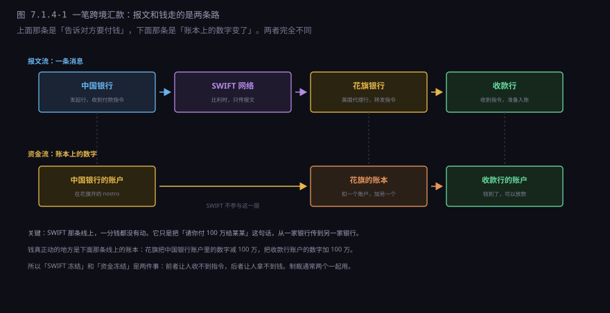
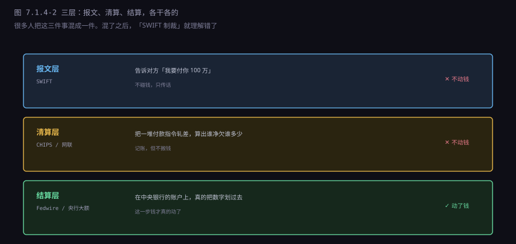
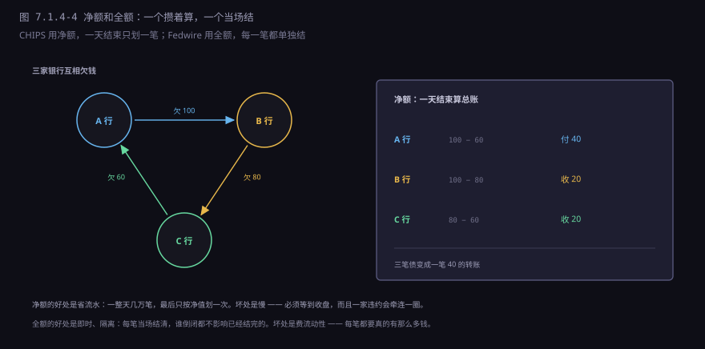
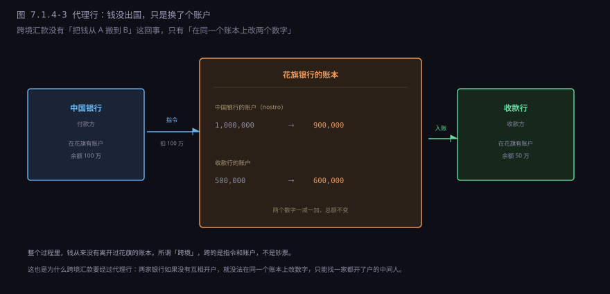
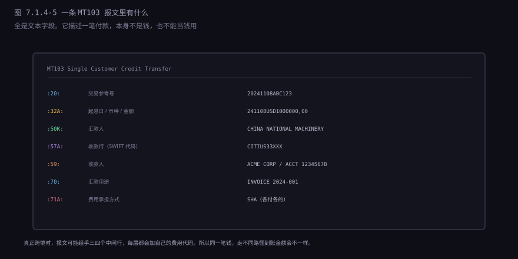
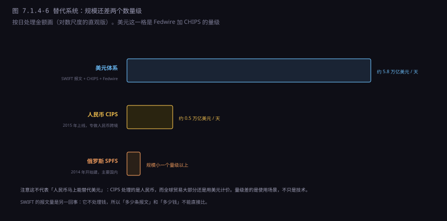

约 0.6 万字 · 6 张图 · 读完你能说清一笔跨境汇款经过哪几条线、 SWIFT 到底管什么不管什么、代理行账户是怎么工作的， 以及「踢出 SWIFT」为什么不等同于「钱被冻结」
一个人在中国，要给在美国的供应商付 100 万美元货款。 他在网银上点了「汇出」，接下来发生的事可以画成两条平行的线。

先看上面那条线。中国银行把付款指令打包成一条报文，通过 SWIFT 网络发给花旗； 花旗确认后转发给收款行；收款行收到，准备入账。 整个过程是消息的传递，SWIFT 不持有任何资金。
再看下面那条线。中国银行在花旗开了一个账户（叫 nostro 账户），里面常年放着钱。 花旗收到指令后，把这个账户的余额减 100 万， 同时把收款行账户的余额加 100 万。两个数字一减一加，总额不变。
这就是跨境汇款的全部秘密：钱没有跨过国境，跨的是指令和账户名。 所谓「美元在全世界流动」，流动的其实是各家银行在纽约的账户上的数字。
把上面两条线拆开，就是三个层次。这三个层次经常被混成一件事， 但它们各自解决的问题完全不同。

| 层次 | 系统 | 做什么 | 动钱吗 |
|---|---|---|---|
| 报文 | SWIFT | 把付款指令从一家银行传到另一家 | 不动 |
| 清算 | CHIPS、网联、银联 | 把一堆指令轧差，算出谁净欠谁多少 | 不动 |
| 结算 | Fedwire、央行大额支付系统 | 在央行账户上真的划账 | 动了 |
一句话记住：SWIFT 是邮局，CHIPS 是算账的，Fedwire 是银行间真正划账的。 邮局关门，信寄不出去，但账本上的钱还在。
SWIFT 的全名是「环球银行金融电信协会」， 1973 年由十五个国家的 239 家银行在布鲁塞尔成立，总部在比利时。
它是一个合作组织，不是公司，不是银行，不是清算所。 它做的事情只有三件：
定格式。规定一条付款报文该有哪些字段、每个字段多长、 用什么代码表示币种和国家。这套格式叫 MT（Message Type）， 后来演进成 ISO 20022 的 XML 格式。
传消息。建一个专用的全球网络，让成员机构之间能安全地收发报文。 这个网络不接互联网，是独立的。
验身份。给每个成员发密钥，确保「这条报文确实是中国银行发的」。
就这三件。它不持有资金、不参与清算、不做结算、不放贷。 它赚的是会员费和报文费，一条报文几毛钱到几块钱。
规模上，它连接 200 多个国家的 11000 多家机构，每天传大约 4000 万条报文。 这个数字听起来很大，但注意单位是「条」，不是「元」—— 报文的数量和钱的金额没有直接关系。 一条报文可以是一块钱，也可以是一百亿。
CHIPS 是「纽约清算所银行间支付系统」，1970 年上线， 由纽约清算所协会（The Clearing House）运营。这是一个私营机构， 由几家大银行共同持有，不是政府机构。
它处理的是美元的大额支付，主要服务对象是银行和跨国公司。 每天大约 1.8 万亿美元、五万笔左右。
它的核心机制是净额结算：一天里收到的所有付款指令， 先记在账上，不立刻划钱；到收盘时，把所有指令轧差， 算出每家银行净收多少、净付多少，只划这一笔净额。

净额的好处很直接：省流动性。如果一天有一万笔、总额一万亿， 但净额只有一百亿，那银行只需要准备一百亿，而不是一万亿。 这让整个系统的资金效率高了一个数量级。
坏处也很直接：风险集中。收盘时如果有一家银行付不出净额， 其他所有银行的账都跟着卡住。这就是「系统重要性机构」的含义—— 它倒闭不是它一家的事。
Fedwire 是美联储运营的大额支付系统，1918 年就有了（当时靠电报）， 现在是实时全额结算（RTGS）。
「实时全额」的意思是：每一笔单独结算，立刻生效，不等收盘。 A 银行要付 B 银行 1 亿，美联储就在 A 的准备金账户上减 1 亿、 在 B 的账户上加 1 亿，这一笔就结完了，没有轧差。
每天大约 4 万亿美元、二十万笔。 注意这个数字比 CHIPS 大——因为它是全额，CHIPS 是净额。 同一笔经济往来，在 CHIPS 里算一次净额，在 Fedwire 里要按全额走。
两者的关系是：CHIPS 收盘后的净额，最终也要通过 Fedwire 结算。 所以 Fedwire 是美元体系的最后一层，也是最硬的一层—— 它直接在美联储的账本上改数字，没有任何信用风险（因为是央行自己的负债）。
前面说「花旗把中国银行账户的钱减 100 万」，这个账户是什么？
它叫 nostro 账户（意大利语「我们的」，意思是「我们的钱在你那儿」）。 中国银行要在美国收付美元，就得在美国的银行开一个美元账户， 里面放着美元。这个账户就是中国银行在美国的「钱包」。
反过来，从花旗的角度看，这个账户叫 vostro 账户（「你们的」）。 同一个东西，两个视角，两个名字。

这就解释了一个常见困惑：为什么汇款要经过「中间行」？ 因为两家银行之间没有直接的账户关系。
比如一个中国的小银行要给南美的一家小银行汇美元， 它们互相没开户，也都不在纽约。怎么办？ 找一家既在纽约、又和两边都有账户的大银行做中间人。 这家大银行就叫「中间行」（intermediary bank）。
每经过一层中间行，就多一次报文转发、多一次合规审查、多一笔手续费。 这就是为什么小银行之间的跨境汇款又慢又贵—— 路径可能有三四跳。
代理行模式还有一个致命弱点，1974 年被一次真实事故暴露了。
那年 6 月 26 日，德国的一家银行 Herstatt 被监管吊销了牌照。 当天它在法兰克福已经收到了对手方付的马克， 但纽约那边还没开盘，它该付的美元还没付出去——然后就倒闭了。 对手方的马克拿不回来，美元也没收到，一笔外汇交易两头落空。
这类风险后来就叫「Herstatt 风险」：两笔转账在不同时区， 一笔完成了，另一笔可能因为对方倒闭而永远完不成。 外汇交易每天几万亿美元，如果每笔都有这个风险，没人敢做。
解决办法是 2002 年上线的 CLS（持续联结清算）。 它的机制叫「付款对付款」：两边的货币同时交收， 要么都成功，要么都不发生。这需要一家同时握着两种货币的机构来做中间人， CLS 就是这么一家——它每天处理约 7 万亿美元的外汇交易，是全球最大的「同时交收」系统。
技术上，一条报文从北京传到纽约是毫秒级的。可实际到账要一到五个工作日。 时间花在哪儿了？
| 环节 | 大概耗时 | 为什么慢 |
|---|---|---|
| 发起行受理 | 几小时 | 要审核单据、核对反洗钱名单 |
| 报文转发 | 几分钟到几小时 | 每经过一家代理行都要重新审一遍 |
| 清算窗口 | 几小时 | CHIPS 一天只开几个批次 |
| 收款行入账 | 几小时到一天 | 要核对、要合规、有时要人工确认 |
| 时区错位 | 半天到一天 | 亚洲的下午是纽约的凌晨 |
加起来就是一到五天。其中合规审查占的时间最多—— 每一家经手的银行都要按反洗钱（AML）和制裁名单（OFAC）查一遍， 查的是「这笔钱的来源、去向、用途有没有问题」。
这也是为什么「跨境汇款要填用途」。不是银行好奇，是法律要求它必须知道。 填「旅游」但实际是货款，被查到会被退回甚至冻结账户。
费用也在这几层里产生：发起行收一笔、每个中间行扣一笔（通常 15 到 30 美元）， 收款行再收一笔入账费。汇 1 万美元，总成本可能在 30 到 80 美元之间。 小额汇款尤其吃亏——汇 100 美元也可能被扣 20 美元。
这里有个强烈的对比：国内的转账早就是秒到了。 你在手机上转一笔钱，对方立刻收到；扫码付款，「叮」一声就到账。 为什么跨境做不到？
因为国内的支付系统是在一个国家、一种货币、一个监管、一个中央账本上跑的。 网联、银联、央行二代支付系统，本质都是「在同一本账上改两个数字」， 而且改完立刻生效。没有代理行，没有中间行，没有跨时区。
印度做得更彻底。2016 年上线的 UPI，把银行账户抽象成一个「虚拟地址」， 转账只要输一个手机号，秒到、免费，现在每天处理一百多亿笔。 巴西的 PIX 也是 2020 年上线的，同样秒到、免费，几年内覆盖了大部分人口。 这两个系统有个共同点：都是新建的，没有历史包袱。
跨境做不到，不是因为技术难，是因为没有一个世界央行。 没有一本所有国家都认的账本，就只能靠代理行一层层转； 没有统一的监管，就只能每家银行各自审一遍。 这套东西不是设计出来的，是五十年里一层层拼出来的——想换，得所有国家同时同意。
SWIFT 报文有几十种类型，最常用的是 MT103——个人对个人的汇款。 它的内容全是文本字段，没有任何「钱」的成分。

:71A: 那个字段：SHA 表示「各付各的」（汇款人付发起行费用，收款人付中间行和收款行费用），OUR 表示汇款人全付，BEN 表示收款人全付。选哪个，直接决定对方实际收到多少。几个字段值得单独说：
:32A: 是金额，格式是「起息日 + 币种 + 金额」，
比如 241108USD1000000,00。注意小数点是逗号，这是 SWIFT 的格式规定。
:57A: 是收款行的 SWIFT 代码（BIC），
八位或十一位，前四位是机构、接着两位是国家、两位是地区。
比如 CITIUS33 就是花旗银行纽约。
:71A: 是费用承担方式，三个选项：
SHA（各付各的，最常用）、OUR（汇款人全付）、BEN（收款人全付）。
这个字段经常引起纠纷——汇款人以为「我付了手续费」，结果中间行又扣了一笔，
对方收到的就少了。要保证对方足额收到，得选 OUR，但费用会高很多。
这套 MT 格式用了五十年，现在正在被替换。新格式叫 ISO 20022， 报文从「固定字段的文本」变成 XML，字段更多、结构更细。
为什么要换？因为老的 MT 格式里，很多信息是塞在自由文本里的。
比如汇款用途，:70: 字段可以写「INVOICE 2024-001」，
也可以写「货款」，还可以写一段话。合规系统拿到这种自由文本，
只能靠关键词匹配，误报率极高。
新格式把这些拆成结构化字段：发票号、合同号、商品编码、交易类型， 各有各的位置。这样反洗钱系统就能自动比对，不用人去猜。 代价是全球上万家机构都要改自己的系统，迁移从 2022 年 11 月开始， 2025 年 11 月才完成——一个报文格式的升级，花了三年。
新闻里经常说「某国被踢出 SWIFT」。这句话经常被理解成「这个国家的钱被冻结了」。 不准确。
被踢出 SWIFT 的实际效果是：这家银行无法再用标准报文和全球银行通信。 它不能发 MT103，也收不到别人的 MT103。 理论上它还可以用电传、电话、传真、邮件去通知对方， 但对方银行不会认——因为没有 SWIFT 的报文，就没法验证真伪， 也没法自动化处理。
结果是：这家银行的跨境业务基本瘫痪。 不是钱没了，是「付不出去、收不进来」——因为没有人能确认指令是真的。
但要注意两件事：
第一，SWIFT 是比利时机构，受欧盟法律管辖。 美国没有直接管辖权，它是通过欧盟配合来施压的。 所以「美国把某国踢出 SWIFT」这个说法，法律上不准确， 实际是「欧盟根据美国的请求，通过了决议」。
第二，真正让钱动不了的不是 SWIFT，是 CHIPS 和 Fedwire。 只要一家银行还在用美元清算，它就必须经过纽约的美元系统； 只要经过，美国就能看到、就能拦。SWIFT 只是让「通信」断掉， 美元清算才是让「钱」断掉。
这就是为什么 2012 年伊朗被制裁时，效果那么彻底： 不只是 SWIFT 断了，是任何还想用美元的机构都不敢和它做生意—— 因为一旦被美国财政部列入 SDN 名单，连坐的后果更严重。
这个问题听起来像政治，其实是技术问题。答案在清算的物理位置。
全世界的美元，最终都要在纽约的账本上结算。 一家伦敦的银行和一家东京的银行做美元交易，钱不会真的从伦敦飞到东京， 而是在纽约的某个账户上改两个数字。这个「纽约的账户」， 要么在美联储（Fedwire），要么在纽约的商业银行（CHIPS）。
所以只要一笔交易走美元，它就必然经过美国的司法管辖范围。 美国的制裁不是「管到别国的银行」，是「管到经过我这里的美元」。 你要用我的货币，就得守我的规矩——这个逻辑简单粗暴，但技术上无懈可击。
这里有个技术细节值得注意：SWIFT 的报文里，:57A:（收款行）
和 :52A:（发起行）都是 BIC 代码。
美国的 OFAC 就是靠这些代码来识别「这笔交易涉及谁」的。
所以制裁不是靠人工看，是靠系统自动扫描报文——每天四千万条，
靠人看是不可能的。
既然被踢出 SWIFT 这么难受，各国当然会建备胎。目前主要有三个：

CIPS（人民币跨境支付系统）2015 年上线，专做人民币的跨境清算。 2023 年处理约 660 万笔、金额约 120 万亿元人民币。 它是「清算+结算」一体，直接连参与行，不依赖 SWIFT。
但它的限制很清楚：只能处理人民币。 而全球贸易大部分用美元计价，别人拿到人民币，还得再换成美元—— 这一换又回到了美元体系。
SPFS（俄罗斯金融报文系统）2014 年开始建，2017 年投入使用。 2022 年被制裁后，它成了俄罗斯国内银行的主要通道， 也接了一些伙伴国家的机构。
但它的规模很小，而且主要是「俄罗斯内部 + 少数双边」。 它解决的是「不用 SWIFT 也能通信」，不解决「别人愿不愿意收卢布」。
INSTEX 是英法德在 2019 年设立的，专门用来绕开美元和伊朗做生意—— 机制是「易货」：欧洲买伊朗的油，伊朗买欧洲的药，两边记账，不走美元。
理论上很聪明，实际上几乎没做成交易。原因很简单： 企业不敢用。用了就可能被美国制裁，而 INSTEX 不能提供保护。
这套三层系统运行了五十年，效率其实很低，但它有四件事做不到：
| 它做不到 | 原因 | 现实表现 |
|---|---|---|
| 让跨境汇款变快 | 多层代理行 + 每家都要合规审查 + 时区 | 一到五个工作日，小额尤其吃亏 |
| 让跨境汇款变便宜 | 每层都收手续费，还有汇率点差 | 汇 100 美元可能被扣 20 美元 |
| 把报文和资金分开管 | 三层系统各自为政，没有统一状态 | 报文发了钱没到，只能人工查 |
| 摆脱政治 | 结算在纽约，就受美国管辖 | 制裁一纸令下，报文和清算一起断 |
第三条是技术上的硬伤。理想的支付系统应该是一个统一的状态机： 发起、扣款、入账、完成，每一步都有确定的状态，可以查询、可以重试、可以回滚。
但现在的跨境支付是三套系统拼起来的： SWIFT 只管传话，不知道钱到没到；CHIPS 只管轧差，不知道这笔是哪笔； Fedwire 只管划账，不管业务含义。任何一环出问题， 你都无法从系统里查到「这笔钱现在在哪」——只能打客服电话，让人工去查。
这就是为什么跨境汇款会「卡在中间」好几天，谁也说不清卡在哪儿。 不是技术不够先进，是这套系统是五十年里一层层拼出来的，从来没被整体设计过。
下一节换一个角度：从「一笔钱怎么走」转到「一个账户是什么」。 账户听起来是最简单的东西——不就是表里的一行吗？ 但银行为了这一行，做了几百年的账，还为此发明了复式记账。